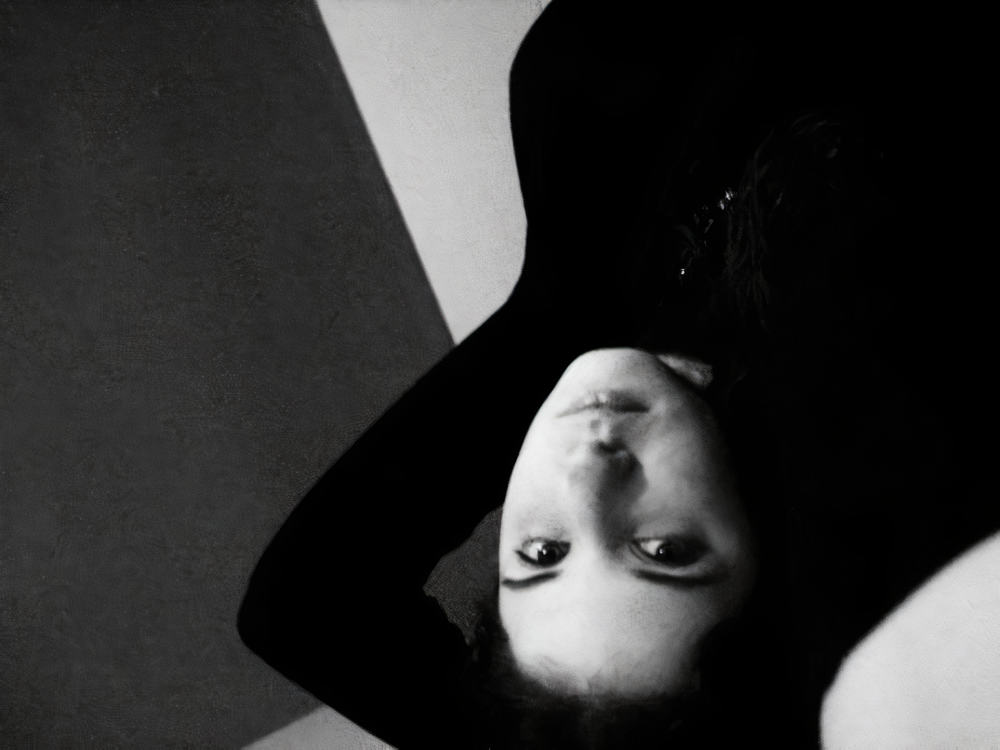
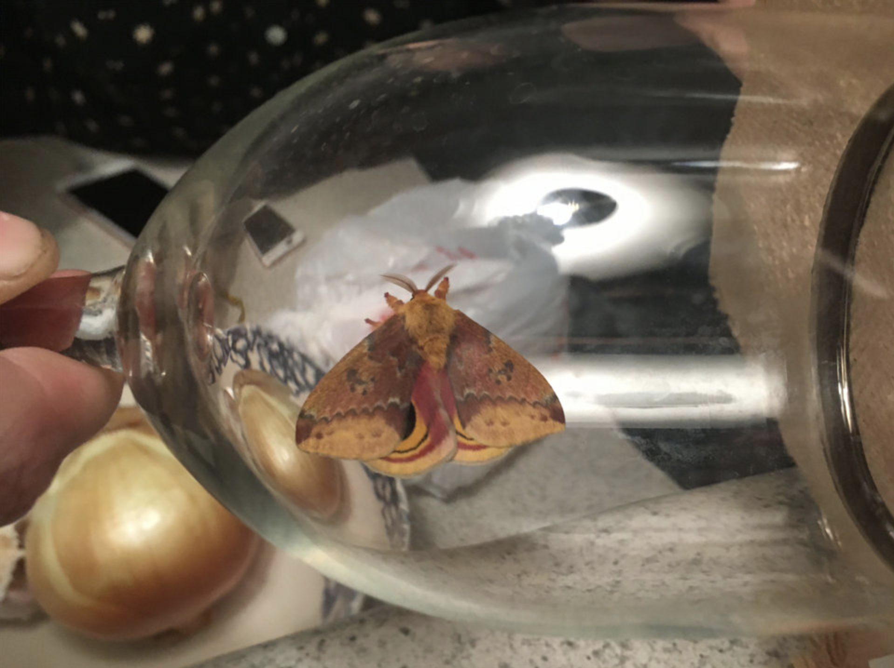
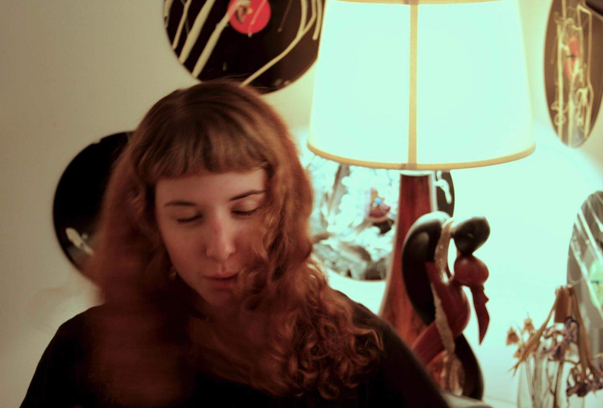
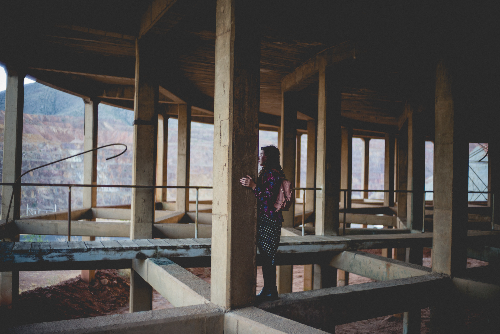

LAURA FISHER
IN LOVE WITH THE ETHEREAL

Classical pianist and former choir girl-turned-songwriter, producer, arranger, Fisher describes herself as “in love with the ethereal and holding on.”
APOPHENIA
PRESS

RIVER BEATS NEW ORLEANS
"For fans of Yiruma and softly gazing out rainy windows, APOPHENIA is a delicate, emotive and heartfelt piece of art..."

MY LITTLE UNDERGROUND
"APOPHENIA isn't a track-by-track album, it's an Album. A full, complete Album. Such things are rare and so immediately it possesses value..."